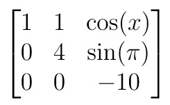

Hogy hangzik a lineáris függetlenség definíciója?
Egy bilineáris forma kvadratikus alakjának pozitív szemidefinitsége szükséges ahhoz, hogy a művelet euklédeszi térbéli legyen.
Ez az állítás helyes.
Az alábbi mátrix determinánsa? :

A mátrix determinánsa -40.